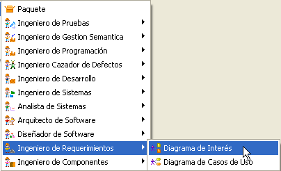
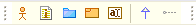
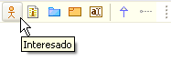
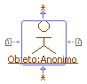
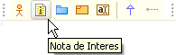
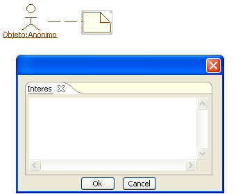
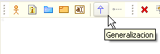

Plugin de Interés
El plugin Diagrama de Interes perimite realizar diagramas personalisados que incluyen elementos de Objetos de tipo interesado que pueden establecer generalizaciones entre sí, resaltando porciones de estos objetos mediante el uso de notas.
Los elementos propios de este diagrama son:
- Interesado
- Nota de Interés
- Generalización
Creación de un nuevo Diagrama de Interés:
Colosoft
soporta el Plugin de Interés mediante la creación de un nuevo
diagrama de Interés.
Para la creación de un nuevo diagrama se selecciona en
el Marco de Expresión: Nuevo, Ingeniero de Requerimientos, Diagrama de
Interés.
Se ingresan los datos correspondientes al diagrama.

Figura 1. Creación de un diagrama de interés
Barra de herramientas del Plugin Diagrama de Interés: La barra de herramientas específica del diagrama de interes posee botones para la creación de interesados, notas de interés, sistemas, frames, notas y generalizaciones.

Figura 4. Barra del diagrama de interés
Interesado: Son Objetos que guardan un interés particular respecto del sistema con el que interactúan o pertenecen.

Figura 5. Creando un Interesado
Para agregar una actividad se selecciona el icono Interesado y luego se hace clic en algún espacio en blanco del diagrama, sobre un frame o sistema.

Figura 6. Atributos del interesado
Aparecerá la ventana de especificación de un Objeto,como se muestra en la Figura 6, que permite asignarle un nombre y una clase de la cual toma las propiedades. Para asignarle una clase preexistente o agregarle atributos y operaciones al actor es necesario que al menos un diagrama de clases se encuentre activo en el marco de expresión. Para asociar una clase al Interesado seleccione una clase existente de la lista deplegable Clase o si lo requiere cree una Nueva Clase haciendo clic en Nueva Clase.
Nueva Clase: la ventana de creación de nueva clase permite escribir el nombre de una nueva clase y seleccionan los diagramas en los cuales esta nueva clase estara contenida.
Para especificar las propiedades de la nueva clase, haga clic en editar, aparece la ventana de especificación de una clase.

Figura 7. Selección de una clase plantilla para el interesado
Para más información sobre las especificación de una clase nueva, vea Diagrama de Clases.
Si se decide tomar una clase como plantilla para el objeto, se deberá especificar como se debe tomar la Fuente de Características, bien sea como clase, objeto o combinado. Como clase el objeto en el diagrama tomará los atributos y las operaciones de la clase plantilla, mientras que como objeto solo generará la asociación a ese tipo sin tomar sus atributos ni operaciones.

Figura 8. Fuente de características para el interesado
El Interesado recién creado permite generar desde los iconos de expansión notas de interés, también permite establecer generalizaciones desde este y hacia otros objetos interesados.
El elemento Interesado luce como sigue:

Figura 8. Representación de un interesado

Figura 9. Notas de Interés
Para crear una nueva Nota de interés se hace clic sobre el icono "Nota de Interes" y arrastre una nueva nota desde un Interesado. También puede hacerlo desde los iconos de expansión.
Aparece una ventana donde podrá editar el texto de la nota de interés.

Figura 10. Creación de Notas
Generalización: cree generalizaciones entre diversos interesados para representar las generalizaciones de las clases cuyos objetos instancian

Figura 11. Creación de una relación de Generalización
Para crear una nueva generalización se hace clic sobre el icono Generalización y luego se hace clic, primero sobre el Interesado más específico y después se hace clic en el Interesado más general.
Aparece la ventana de especificación de la relación, desplegando la primera pestaña de texto en la que se escribe el nombre correspondiente al estereotipo de la relación.
También puede establezca generalizaciones desde los iconos de expansión del Interesado.

Figura 12. Asociación de interesados